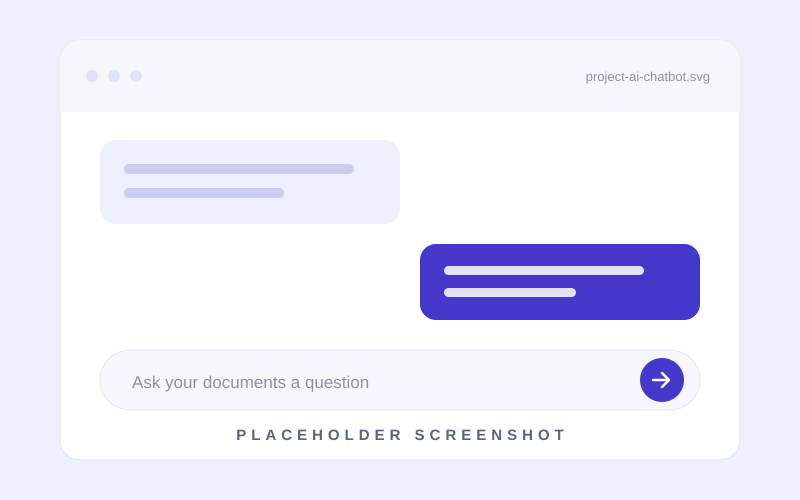

AI · Full stack
AI Chatbot Assistant
A chatbot that answers questions from a document-based knowledge base instead of the open internet. An admin panel lets an administrator add and manage the documents it searches, and the front end is plain JavaScript talking to a Python API.
Tech used
View project
Private repository